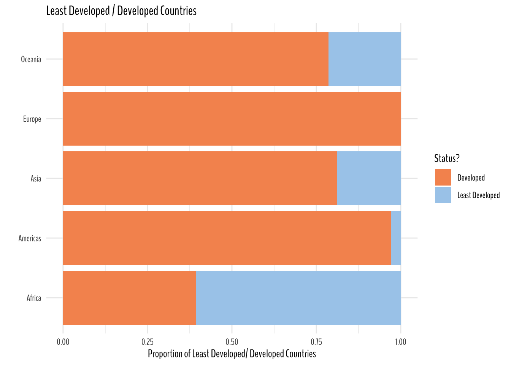
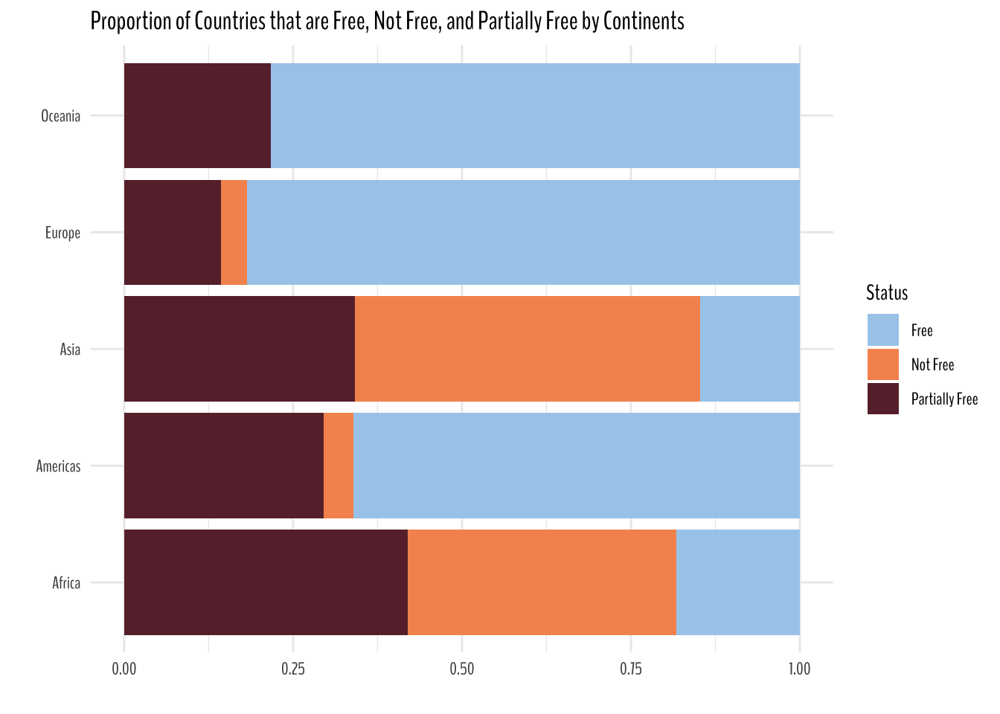
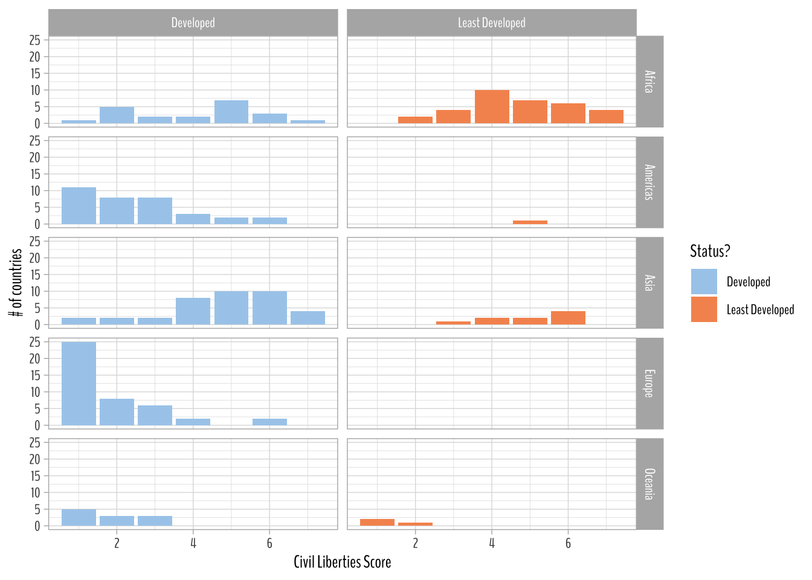
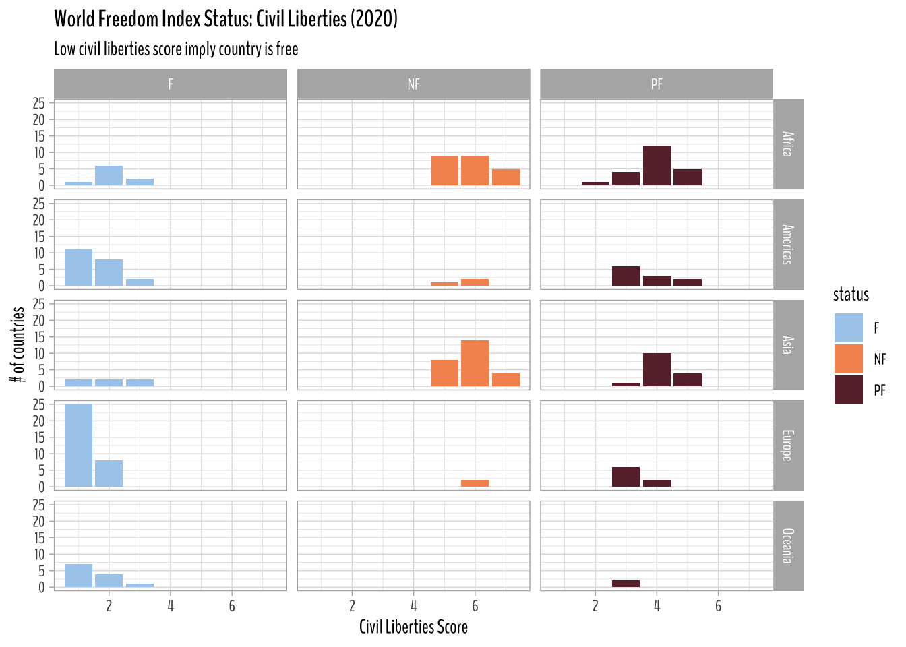
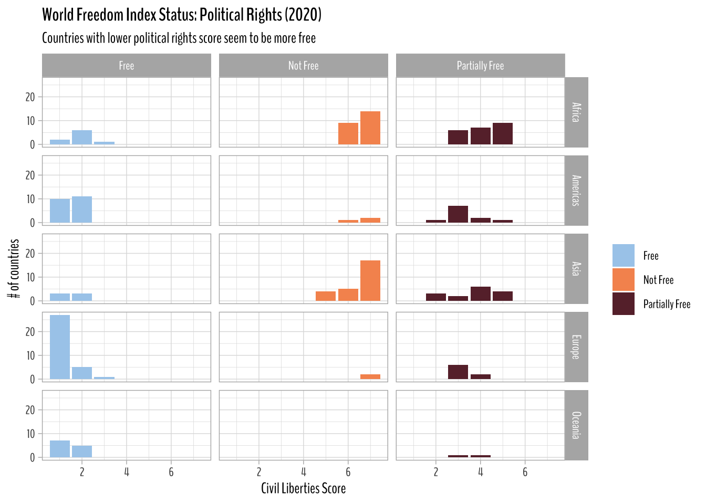
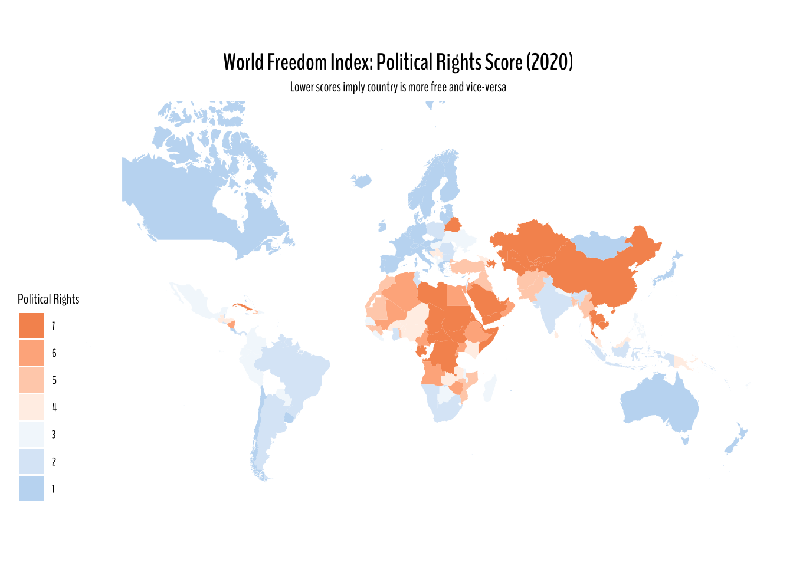
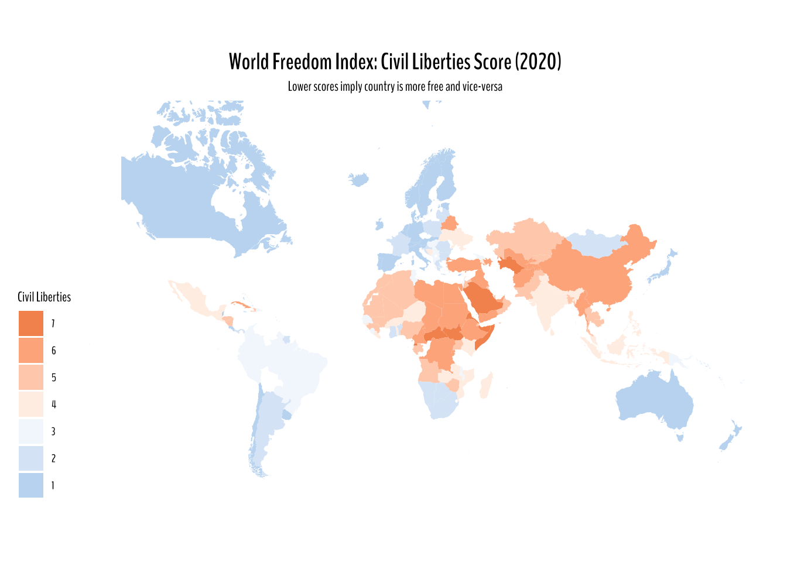
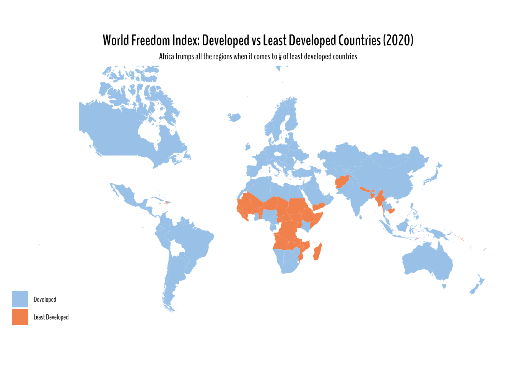

# Analysis Pack
library(tidyverse)
library(tidytuesdayR)
library(scales)
library(infer)
# Theming Pack
library(nationalparkcolors)
library(paletteer)
# Styling Pack
library(reactable)
library(reactablefmtr)
library(showtext)
library(showtextdb)
library(extrafont)
library(extrafontdb)
library(gganimate)
font_add_google("BenchNine", family = "BenchNine")
showtext_auto()Libraries
Data
Pulling this week’s #TidyTuesday data using tidytuesdayR package.
tuesdata <- tidytuesdayR::tt_load(2022, week = 8)--- Compiling #TidyTuesday Information for 2022-02-22 ------- There is 1 file available ------ Starting Download ---
Downloading file 1 of 1: `freedom.csv`--- Download complete ---freedom <- tuesdata$freedom %>%
janitor::clean_names() %>%
rename(civil_liberties = cl,
political_rights = pr) %>%
mutate(is_ldc = ifelse(is_ldc, "Least Developed", "Developed"))Exploratory Data Analysis
freedom %>%
count(country) %>%
reactable(
theme = espn(
font_size = 12
),
columns = list(
country = colDef(name = "Country", align = "center"),
n = colDef(name = "No. of Occurrences", align = "center")
)
)freedom %>%
count(country) %>%
filter(n != 26) %>%
reactable(
theme = espn(
font_size = 12
),
columns = list(
country = colDef(name = "Country", align = "center"),
n = colDef(name = "No. of Occurrences", align = "center")
)
)It does look like for the most part all of the countries appear 26 times in the dataset except for Montenegro, Serbia, South Sudan, and Timor-Leste.
There are a lot of things that we can uncover here. I will start off by looking at the number of developed and least developed countries. I will create a proportion chart by continent (or region in this dataset) to see what continent has higher proportion of least developed countries.
We can also dig deeper into civil rights and political liberties index and see what scores the country receive.
I would also love to take a deeper look at my country Nepal’s ranking when it comes to civil liberties and political rights.
Less talk, more work!
freedom %>%
group_by(region_name) %>%
add_count(is_ldc) %>%
mutate(avg_prop = sum(is_ldc == "Least Developed")/ n()) %>%
ungroup() %>%
mutate(is_ldc = is_ldc %>% fct_reorder(-avg_prop)) %>%
ggplot(aes(y = region_name, fill = is_ldc))+
geom_bar(position = "fill")+
theme_minimal()+
scale_fill_paletteer_d("nationalparkcolors::Arches", guide = guide_legend(reverse = T))+
labs(y = "",
x = "Proportion of Least Developed/ Developed Countries",
fill = "Status?",
title = "Least Developed / Developed Countries")+
theme(text = element_text(family = "BenchNine"))
Takeaways from the plot:
- Africa has a lot more least developed countries than developed countries. The metadata informs is_ldc = 0 implies least developed, so I am assuming 1 to be considered developed.
- Europe doesn’t have a single least developed country. I am really intrigued on how these countries were classified.
- Oceania’s proportion of least developed countries seem to be higher than Asia.
- For Americas it is pretty self explanatory.
Quick Math Check
freedom %>%
group_by(region_name) %>%
summarize(avg_prop = sum(is_ldc == "Least Developed")/ n()) %>%
reactable(
theme = espn(
font_size = 12
),
columns = list(
region_name = colDef(name = "Region Name", align = "center"),
avg_prop = colDef(name = "Average Proportion", align = "center")
)
)Quick Detour: Nepal, here I come!
I want to see what what countries Nepal relates the most when it comes to political rights and civil liberties. The best way to go about it would be to do a correlation analysis. So, here comes widyr package (Definitely, learned it from Drob 🐐)
I would highly suggest checking out widyr. Great package!!!
Here, the output is in tidy form and one of the benefits of widyr is that it takes the input in tidy form and gives the output in tidy form as well, which in turn just saves lines of code and time.
library(widyr)
freedom %>%
widyr::pairwise_cor(country, year, civil_liberties, method = "pearson", sort = T) %>%
filter(item1 == "Nepal") %>%
filter(!is.nan(correlation)) %>%
reactable(
theme = espn(
font_size = 12
),
columns = list(
item1 = colDef(name = "", align = "center"),
item2 = colDef(name = "Countries", align = "center"),
correlation = colDef(name = "Correlation", align = "center")
)
)Ah, not surprised. Very true and damning. Nepal and Haiti seem to be correlated over time when it comes to civil liberties.
freedom %>%
widyr::pairwise_cor(country, year, political_rights, method = "pearson", sort = T) %>%
filter(item1 == "Nepal") %>%
filter(!is.nan(correlation)) %>%
reactable(
theme = espn(
font_size = 12
),
columns = list(
item1 = colDef(name = "", align = "center"),
item2 = colDef(name = "Countries", align = "center"),
correlation = colDef(name = "Correlation", align = "center")
)
)Nepal and Zimbabwe seem to be strongly correlated when it comes to political rights over time. I don’t know anything about Zimbabwe other than the fact that they used to have a great cricket team. My family follows cricket and football (the one that is played with feet), so that’s the only thing I know on them.
On Track
We also have a list of countries that are labeled free, not free, and partially free. Let’s take a look at their proportion by continents (or regions).
freedom %>%
mutate(status = case_when(status == "F" ~ "Free",
status == "NF" ~ "Not Free",
status == "PF" ~ "Partially Free")) %>%
ggplot(aes(y = region_name, fill = status))+
geom_bar(position = "fill")+
scale_fill_paletteer_d("nationalparkcolors::Arches")+
theme_minimal()+
theme(text = element_text(family = "BenchNine"))+
labs(x = "", y = "", title = "Proportion of Countries that are Free, Not Free, and Partially Free by Continents",
fill = "Status")
freedom %>%
filter(year == 2020) %>%
mutate(is_ldc = is_ldc %>% fct_reorder(civil_liberties)) %>%
count(region_name, civil_liberties, is_ldc) %>%
ggplot(aes(civil_liberties, n, fill = is_ldc)) +
geom_col()+
facet_grid(region_name ~ is_ldc)+
theme_light()+
theme(text = element_text(family = "BenchNine"))+
labs(x = "Civil Liberties Score", y = "# of countries", fill = "Status?")+
scale_fill_paletteer_d("nationalparkcolors::Arches")
Takeaways from the plot above:
- Decent amount of countries in the Asia with higher civil liberties score are classified as Developed country.
- In Americas, most of the developed countries have a lower civil liberties score.
Math Check
freedom %>%
filter(year == 2020,
region_name == "Asia") %>%
select(country, civil_liberties, is_ldc) %>%
filter(is_ldc == "Developed") |>
reactable(
theme = espn(
font_size = 12
),
columns = list(
country = colDef(name = "Country", align = "center"),
civil_liberties = colDef(name = "Civil Liberties", align = "center"),
is_ldc = colDef(name = "Least Developed?", align = "center")
)
)World Freedom Index Status: Civil Liberties Score (2020)
From the plot below, we can say that countries that are categorized as free have lower civil liberties score. Partially free and not free countries have higher civil liberties score in 2020.
freedom %>%
filter(year == 2020) %>%
count(region_name, civil_liberties, status) %>%
ggplot(aes(civil_liberties, n, fill = status))+
geom_col()+
facet_grid(region_name~status)+
theme_light()+
theme(text = element_text(family = "BenchNine"),
plot.title = element_text(face = "bold"))+
scale_fill_paletteer_d("nationalparkcolors::Arches")+
labs(x = "Civil Liberties Score",
y = "# of countries",
title = "World Freedom Index Status: Civil Liberties (2020)",
subtitle = "Low civil liberties score imply country is free")
World Freedom Index Status: Political Rights (2020)
The plot below informs that countries with low political rights score seem to be more free.
freedom %>%
mutate(status = case_when(status == "F" ~ "Free",
status == "NF" ~ "Not Free",
status == "PF" ~ "Partially Free")) %>%
filter(year == 2020) %>%
count(region_name, political_rights, status) %>%
ggplot(aes(political_rights, n, fill = status))+
geom_col()+
facet_grid(region_name~status)+
theme_light()+
theme(text = element_text(family = "BenchNine"),
plot.title = element_text(face = "bold"))+
scale_fill_paletteer_d("nationalparkcolors::Arches")+
labs(x = "Civil Liberties Score",
y = "# of countries",
title = "World Freedom Index Status: Political Rights (2020)",
subtitle = "Countries with lower political rights score seem to be more free",
fill = "")
Maps
World Freedom Index: Political Rights Score (2020)
countrycode package along with map_data("world") data from ggplot2 allows for easy
mapping methods.
library(countrycode)
freedom_joined <- freedom %>%
mutate(country_code = countrycode(country, "country.name", "iso2c")) %>%
left_join(map_data("world"), by = c("country" = "region"), suffix = c("", "_map"))Warning in left_join(., map_data("world"), by = c(country = "region"), suffix = c("", : Each row in `x` is expected to match at most 1 row in `y`.
ℹ Row 1 of `x` matches multiple rows.
ℹ If multiple matches are expected, set `multiple = "all"` to silence this
warning.freedom_joined %>%
filter(year == 2020) %>%
ggplot(aes(long, lat, group = group))+
geom_polygon(aes(fill = political_rights))+
ggthemes::theme_map()+
coord_map(xlim = c(-180, 180))+
scale_fill_gradient2(low = "#A8CDEC", high = "#F6955E", midpoint = 3.5,
guide = guide_legend(reverse = TRUE))+
labs(fill = "Political Rights",
title = "World Freedom Index: Political Rights Score (2020)",
subtitle = "Lower scores imply country is more free and vice-versa")+
theme(text = element_text(family = "BenchNine"),
plot.title = element_text(face = "bold", size = 15, hjust = 0.5),
plot.subtitle = element_text(hjust = 0.5))
World Freedom Index: Civil Liberties Score Score (2020)
freedom_joined %>%
filter(year == 2020) %>%
ggplot(aes(long, lat, group = group))+
geom_polygon(aes(fill = civil_liberties))+
ggthemes::theme_map()+
coord_map(xlim = c(-180, 180))+
scale_fill_gradient2(low = "#A8CDEC", high = "#F6955E", midpoint = 3.5,
guide = guide_legend(reverse = TRUE))+
labs(fill = "Civil Liberties",
title = "World Freedom Index: Civil Liberties Score (2020)",
subtitle = "Lower scores imply country is more free and vice-versa")+
theme(text = element_text(family = "BenchNine"),
plot.title = element_text(face = "bold", size = 15, hjust = 0.5),
plot.subtitle = element_text(hjust = 0.5))
World Freedom Index: Developed vs Least Developed Countries (2020)
freedom_joined %>%
filter(year == 2020) %>%
ggplot(aes(long, lat, group = group))+
geom_polygon(aes(fill = is_ldc))+
ggthemes::theme_map()+
coord_map(xlim = c(-180, 180))+
scale_fill_paletteer_d("nationalparkcolors::Arches")+
labs(fill = "",
title = "World Freedom Index: Developed vs Least Developed Countries (2020)",
subtitle = "Africa trumps all the regions when it comes to # of least developed countries")+
theme(text = element_text(family = "BenchNine"),
plot.title = element_text(face = "bold", size = 15, hjust = 0.5),
plot.subtitle = element_text(hjust = 0.5))